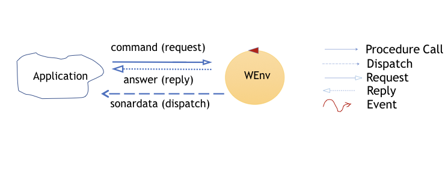
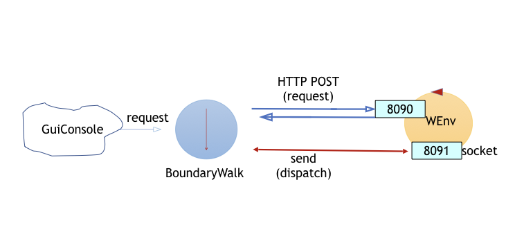

Introduction
This case-study starts to deal with the design and development of proactive/reactive software systems which work under user-control.
Requirements
Requirements analysis
We can highligh the following words to understand the requirements.
Some words was clarify in this project:
boundaryWalk.html
consoleGui: a console with two bottom which sent information to the application;
shows the robot-moves history: it means that the application need a way to memorize the moves.
The customer does not impose any requirement on the programming language used to develop the application.
User sotry
The user story is described in the requirements.
Problem analysis
In the VirtualRobot2021.html: commands the customer states
that the robot can receive move commands in two different ways:
- by sending messages to the port 8090 using HTTP POST
- by sending messages to the port 8091 using a websocket
|

|
|
The user can start and, if he want, interrup the application through a ConsoleGui, this requirements suggest to evaluate the correct way to choose the better port to send message in more efficiently way and observe pattern.
|

|
Because the application shows the robot history moves the end of boundary should evaluate to use a map where updating the robot moves.
Possible Resource
for ConsolGui: there are some Toolkits for example Apace_Pivot to implements consoleGui Interface. Or the Consolegui.java
(in project it.unibo.virtualrobotclient)
for MapUtility: could be implemented in Kotlin. It supports mutables and not maps, it is a jvm runnable language which make an important interoperability with Java, and also it is adaptable.
Some other resources: The RobotMovesInfo.java
(in project it.unibo.virtualrobotclient)
The RobotInputController.java
(in project it.unibo.virtualrobotclient)
Logical architecture
It is important specify that the application could be knowledge indipendent.
Websocket could make the application more versatile and indipendet in exchanging messages.
Using a websocket library breaks the single flow of application control into several threads.
The following resources could be usefully exploited to reduce the development time of a first prototype of the application:
Annotations: Using annotated POJOs, developers can interact with WebSocket life cycle events.
To exploit the asynchronicity of the interaction in a structured way, the reference design model is the Observer model.
Timing
The expected time required for the development of the application is (no more than) 6 hours.
Test plans
Time is set for moves
w, s Every each moves are of a
robot-unity. An
envirorment map will be built incrementally after every each moves. At the end the application shows the roboth path. For example (
1 represent the robot-unity):
|r, 1, 1, 1, 1,
|1, 0, 0, 0, 1,
|1, 0, 0, 0, 1,
|1, 0, 0, 0, 1,
|1, 1, 1, 1, 1, X,
|X,
Project
The project was implemented in Java and Kotlin languages.
It was based on the study of last works:
BoundaryWalk ,
Virtualrobot clients
As in the
BoundaryWalk project, the intermidiation components use annotations and issSupport to implement the abstaction level.
We want implement the application knowledge and thecnological indipendent. Therefore we considering aril command, websocket comunicatons and message buffered interaction to the robot.
Consolegui.java use Observer to implements its functions Observable and Observer but they are deprecated because they aren't the best configuration to make faster the asynchronous comunications.
Clients written in Java using observable supports
To facilitate the work of the application designer, we will introduce new resources, including the idea of a
support
for (high-level) communications that provides operation to add/remove observers, by implementing a proper interface.

At the moment, this interface defines a method handleInfo that accepts two types of arguments
public interface IssObserver {
public void handleInfo(String info);
public void handleInfo(JSONObject info);
}
Our observable supports must implement an interface that adds new operations to our high-level communication interface:
public interface IssCommSupport extends IssOperations {
void registerObserver( IssObserver obs );
void removeObserver( IssObserver obs );
void close();
}
|
The new version of the IssWsSupport must implement all the operations specified by the
IssCommSupport interface and by the annotations:
@ClientEndpoint //javax.websocket annotation
public class IssWsSupport implements IssCommSupport {
//Callback for websockets events
...
//Implementation of IssOperations
...
//Implementation of IssCommSupport-specific operations
}
Since we aim at using the new concept of observable supports for communication, our IssCommsSupportFactory must now
provide factory methods that return an object of type
IssCommSupport:
public class IssCommsSupportFactory {
//Factory Method
public static IssCommSupport create(Object obj ){
//obj must be properly annotated
...
}
public static IssCommSupport create(
String protocol,String url){
switch( protocol ){
case "HTTP" : { return new IssHttpSupport( url );}
case "WS" : { return new IssWsSupport( url ); }
default: return new IssHttpSupport(url); //TODO Exception
}
}
|
Isolating the business logic (that builds a map)
ClientBoundaryWebsockArilAsynch.java
The client walks along the boundary of the room, by sending commands wriiten in aril.
The business logic is able to build two different types of robot-moves history:
- a string that represents the robot path expressed as a sequence of moves. For example:
wwwlwwwlwwwlwwwl
- the places that the robot has explored, represented within a map of the room. For example
|r, 1, 1, 1, 1,
|1, 0, 0, 0, 1,
|1, 0, 0, 0, 1,
|1, 1, 1, 1, 1,
In this representation, we suppose that:
- r means: cell occupied by the robot
- 0 means: cell not explored
- 1 means: cell explored
- X means: cell occupied by an obstacle
|
Zoomimg into the application

Requires 4 Thread, because of the IssWsSupport.
|
Map Util is implemented in Kotlin for the reason said in the problem analysis.
We can build a map of the space, by exploting the fact that a aril forward/backward move
covers a length equals to the length DR of the robot.
Thus, we imagine to subdivide the available space into a grid of nr * nc squares of side DR.
|
 A space with obstacles.
A space with obstacles.
|
|
A support for the room-map is given by the following utility (written in Kotlin ):
mapUtil.kt :
- creates a room map as a singleton;
- provides the operation doMove(move: String ) that updates the map according to the given aril robot move
(w | s | r | l | h )
- provides the operation getMapAndClean( ): String that returns a String-representation of the current map and
resets the map to the empty map;
- provides the operation showMap( ) that prints on the standard output the String-representation of the current map.
A demo is available in:
MainMapUsage.kt
|